Our factory team processes fruit and herbs harvested from Our Farm into honey, oils, powders and frozen treats — every batch handled with care.
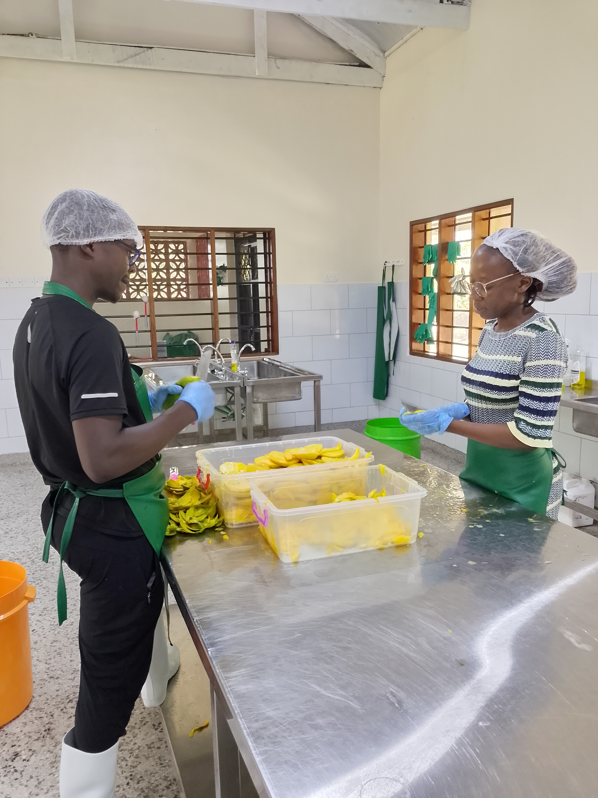
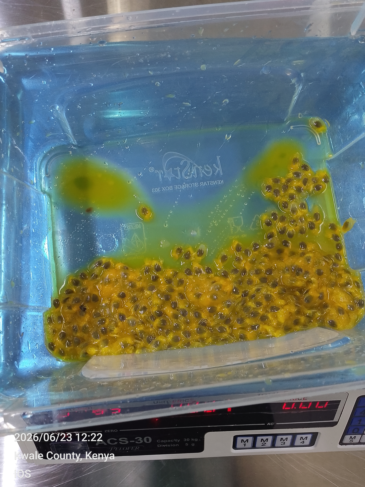

Made from organically grown fruit and herbs — no artificial shortcuts, just real ingredients processed with care.
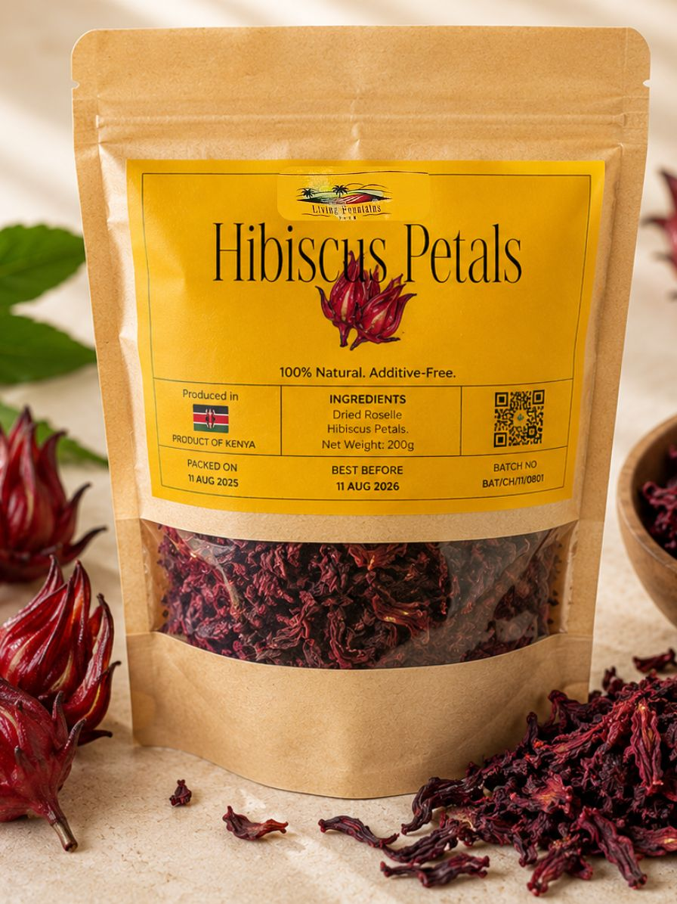
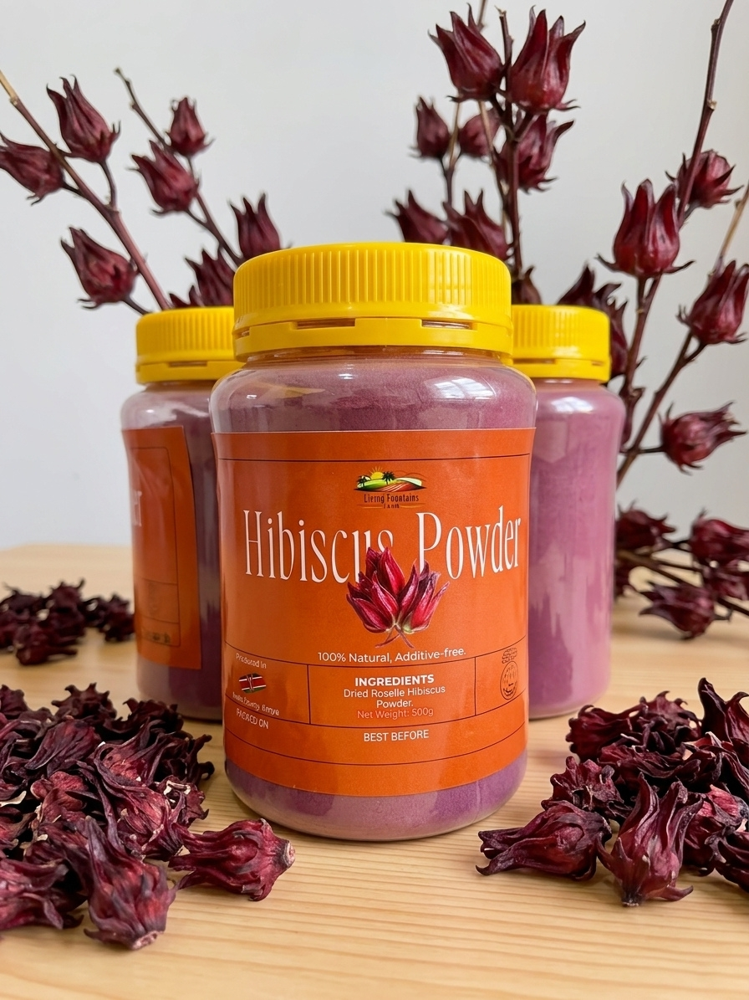
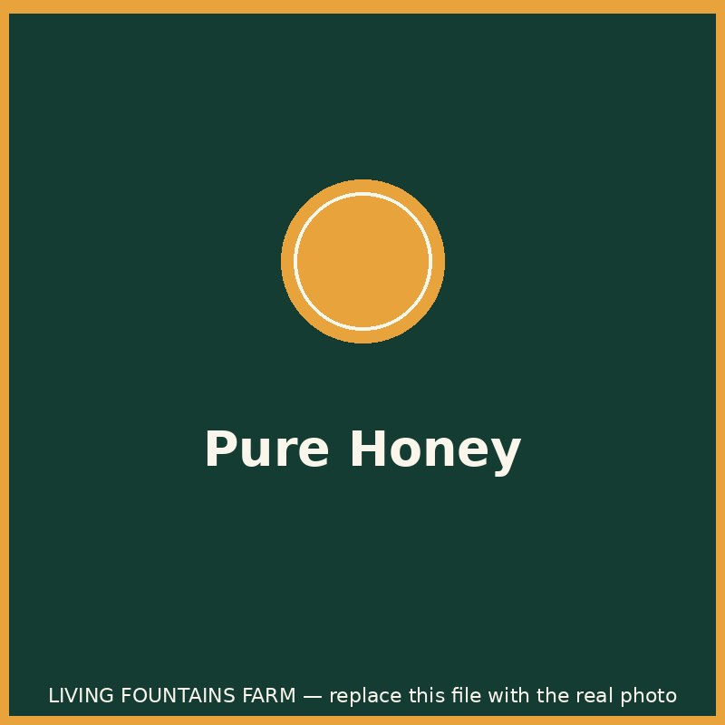
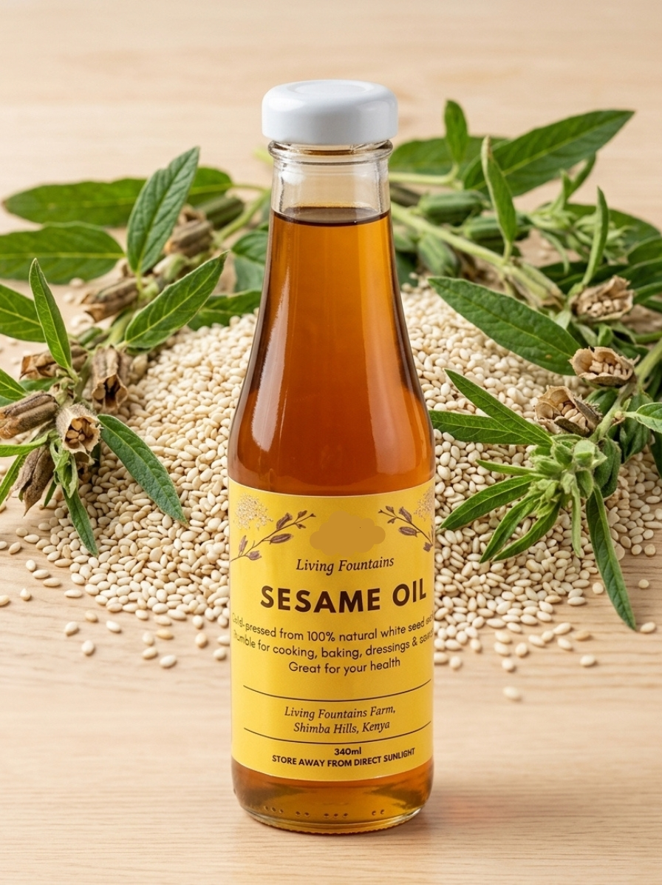
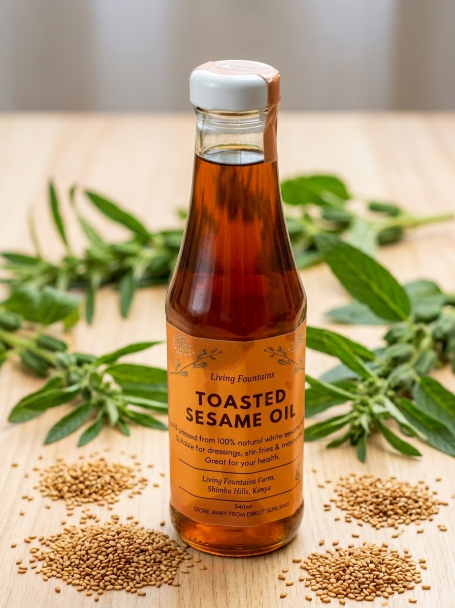
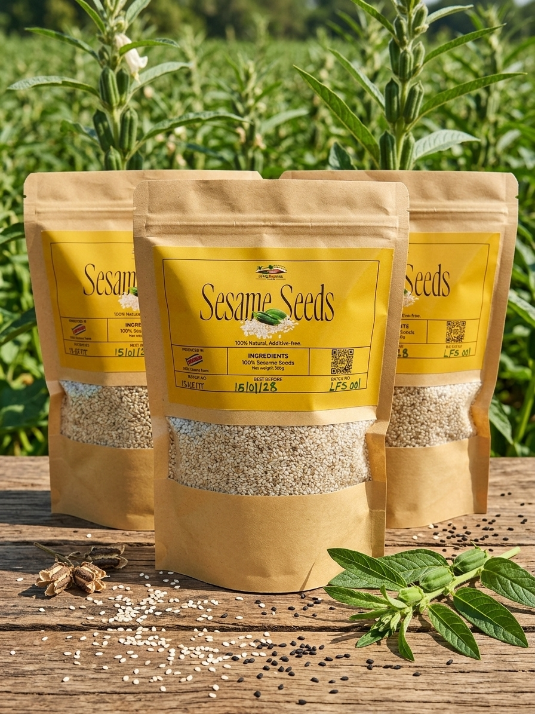
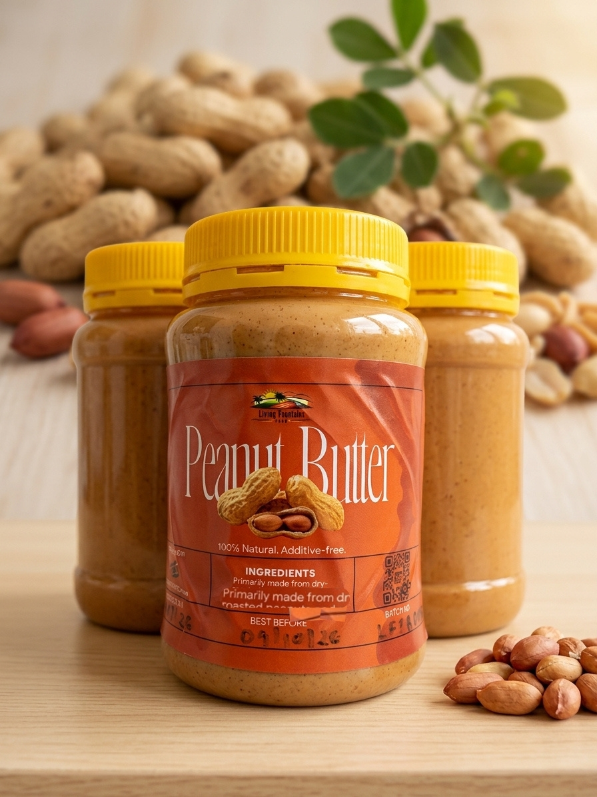
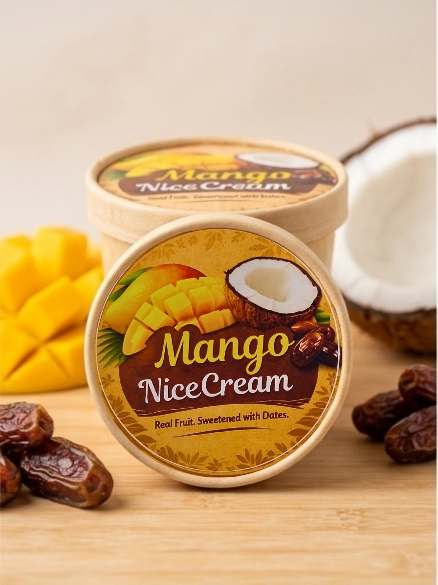
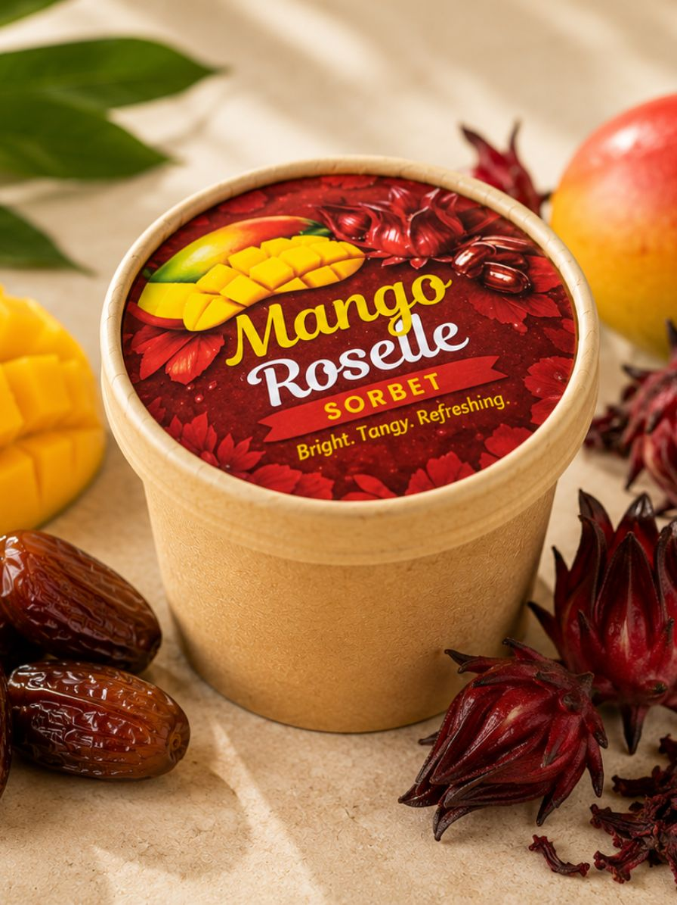
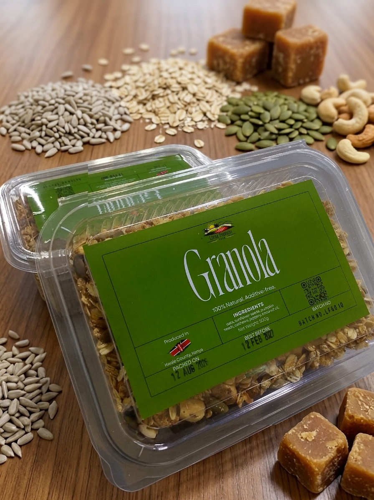